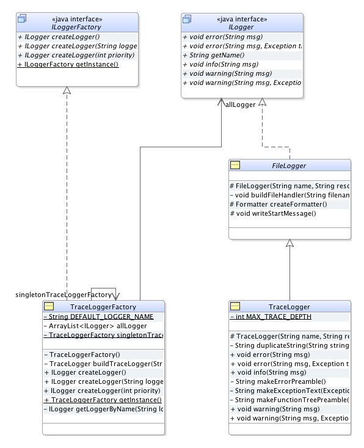

See: Description
| Interface | Description |
|---|---|
| ILogger |
A Logger object is used to log messages for a specific system or application component.
|
| ILoggerFactory |
This interface represents an abstract factory for creating and managing
ILogger in a system. |
| Class | Description |
|---|---|
| FileLogger |
This logger sets a basic structure for handling logfiles.
|
| TraceLogger |
A logger based on
FileLogger which documents the stack trace of all errors and warnings. |
| TraceLoggerFactory |
This factory class provides an exclusively single object that manages all
ILogger
(based on TraceLogger) in the project. |
This package contains several classes which provides a simple interface for logging events. The class
structure is shown in the following image:

The interfaces ILogger and ILoggerFactory represent the facade for classes
from other packages who wants to use the provided services for logging of this package.
As the naming indicates the ILoggerFactory is an abstract factory for creating and handling
logger. For this it provides a method to get an instance, which access to inner classes of the package to
create a specific factory, and to create a logger. The API for creating such a factory is as follows:
ILoggerFactory myLoggerFactory = ILoggerFactory.getInstance(); //get factory (most time singleton)
ILogger myLogger = myLoggerFactory.createLogger(); //create default logger
myLogger.info("This logger was created by an ILoggerFactory"); //example info message
ILogger which defines standard methods a logger must support. This
includes the writing of log messages in three different level:
Within this package there are three classes which are implementing the given interfaces above.
To write all log message in a file which is updated while execution the FileLogger class
represents a basic element for this. It extends the standard java logger Logger and
implements ILogger so that all messages are automatically written in a log file.
TraceLogger extends this structure by adding the stack trace to every warning and error message.
Thus it is much easier to track the course of events of the problem.
The TraceLoggerFactory is a factory using the singleton method to guarantee the uniqueness
of a logger in a project while using TraceLogger as standard logger class.
Does a class or object want to create a logger which already exists the factory will
only return the existing logger object and not create a new one. With this different objects can simply agree
on one logger collecting all messages.
Detailed information on every class could be found on their specific site.
Dependencies
The logging package has no dependencies to other packages in this project.